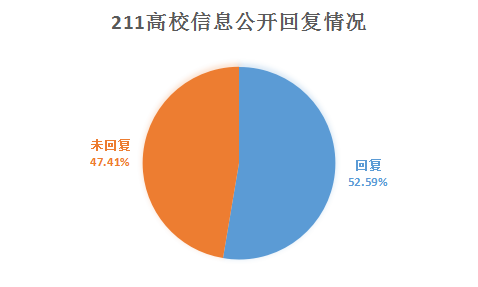
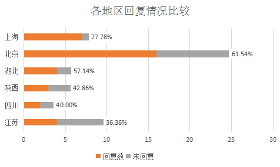
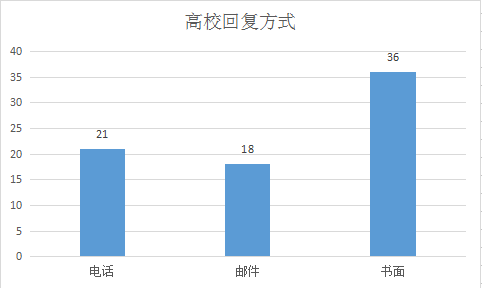
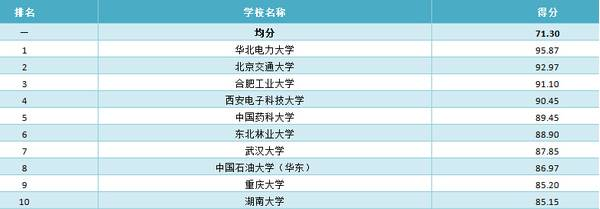

引言：
今年3月末，一群女青年向全国116所211高校申请了信息公开，要求各高校公开落实教育部 《关于做好2016届全国普通高等学校毕业生就业创业工作的通知》第十四条的规定，要坚决反对任何形式的就业歧视，凡校园招聘活动严禁发布含有限定院校、性别、民族等歧视性信息的情况。（详情请见上一篇推送）
一、116所211高校的整体回复情况

截止到5月28日，累计收到61所高校的回复，回复率为52.59%。虽然2010年9月1日起施行的《高等学校信息公开办法》第十八条规定：对申请人的信息公开申请，高等学校根据下列情况在15个工作日内分别作出答复。但实际上严格按照信息公开办法在15个工作日内作出回复的高校更少，最近一次作出回复的高校为中国石油大学（北京），邮戳日期显示为5月18日。
二、各地区211高校回复情况的比较

选取211高校数量在5所及以上的6个省份/地区进行比较，回复率最高的为上海77.78%，其次是北京回复率为61.54%，江苏省高校的回复率最低为36.36%，比全国平均水平还低16.23个百分点。
在211高校数量不足5所的省份/地区中，广东省（4所）、山东省（3所）回复率为100%，福建省（2所）回复率为0%.
三、高校回复方式

据了解，女青年们在信息公开申请表所需信息的指定提供方式和获取信息的方式中，分别选择了纸质和邮寄，但高校有ta们自己的想法。仅31.03%（36所）的高校按照申请者的要求作出了纸质回复。中国政法大学是唯一1所采用了电话/邮件/书面3种回复方式的高校。
上海财经大学、中南大学和西安交通大学等9所高校仅做出了电话回复。通过和工作人员的交谈，申请者发现这些高校在信息公开方面存在许多问题。某高校工作人员不清楚信息公开的回复流程，反向申请者询问，业务水平有待提高。某高校过分关注申请者的社会身份，甚至带有盘问的意味。某高校回复方式相当随意，第一次电话告知对企业筛选会影响就业率，也无相关救济措施，后来又打电话改口说有相关措施。
四、高校信息公开排名

上图为21世纪教育研究院“高等教育信息公开”项目组通过监测和统计分析，对2014年75所直属高校信息公开进行综合评价得出的排名。仅从回复数量上来看，前十名中北京交通大学，合肥工业大学，西安电子科技大学和重庆大学尚未对此次申请作出任何回应。
五、禁止校园招聘中性别歧视的高校经验
华南理工大学：对学校就业在线发布的招聘信息均进行内容审查，凡含有限定院校、性别、民族等歧视性内容的招聘信息，一律不予通过和发布。
大连海事大学：如果发现确有企业在招聘过程中对学生有明显就业歧时，我们将严肃处理。一方面将暂停该企业在学校继续招聘的资格；另一方面，也会将此信息通过教育部、就业联合体的信息交互平台进行通报，会同其他院校抵制此类企业入校招聘。
东北林业大学：在校园招聘活动中，涉及有欺诈、侮辱和传播非法广告的行为的单位和个人，学校坚决予以清理，情节较为严重或涉及违法的，报请公安机关处理。
吉林大学：对认定为性别就业歧视的信息不予发布，但对护理、艺术团体及部分妇女组织明确需求女性，部分建筑工程等施工单位和部分强体力要求的岗位明确要求为男性的招聘信息不视为性别就业歧视信息。（注：1990年1月18日劳动部发布女职工禁忌劳动范围的规定。
关注“就业性别歧视监察大队”微信，回复高校名称，获得已回复高校信息公开完整回复。（目前暂开放“北京大学”、“清华大学”两所高校，后续将陆续录入和更新，录完会及时告知）
举报身边的就业性别歧视，请私信@就业性别歧视监察大队。（新浪微博）
点击阅读原文，有彩蛋。